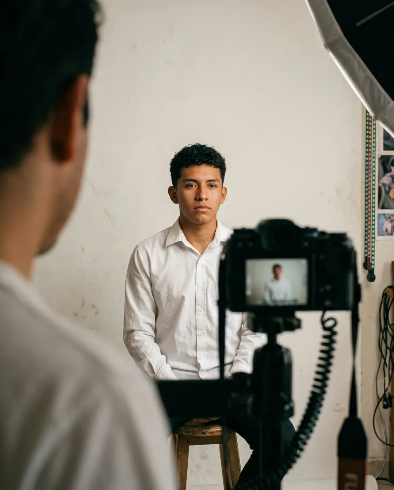

Fondo blanco, trámites
Fotos para documentos
La foto que te piden para la escuela, el trabajo o un trámite oficial, con el tamaño, el fondo y la pose que pide cada documento. Si no sabes qué medida necesitas, dinos para qué es y te orientamos.
- Tamaño infantil
- Pasaporte y visa
- Título y cédula
- Credenciales
